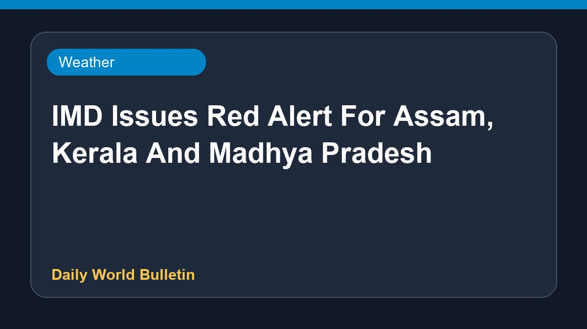

IMD Issues Red Alert For Assam, Kerala And Madhya Pradesh

The IMD has issued a red alert for Assam, Kerala, and Madhya Pradesh as heavy rainfall batters several parts of the country. Weather authorities have flagged severe conditions across these regions, prompting heightened preparedness and cautionary advisories. Citizens in the affected areas are advised to stay updated on local meteorological forecasts and adhere to safety guidelines issued by disaster management authorities as downpours continue.
Original source: Weather News Sources
IMD Issues Red Alert For Assam, Kerala And Madhya Pradesh As Heavy Rain Batters India - news18.com ↗
IMD Issues Red Alert For Assam, Kerala And Madhya Pradesh As Heavy Rain Batters India - news18.com ↗
Related News
 Weather
WeatherTelangana's monsoon deficit narrows to 5% with expected further reduction by IMD
 Weather
WeatherIMD issues heavy rain alert across India; Delhi expected to see more showers
 Weather
WeatherIMD Issues Rain Alert For Delhi, UP, Bihar And Other States
 Weather
Weather